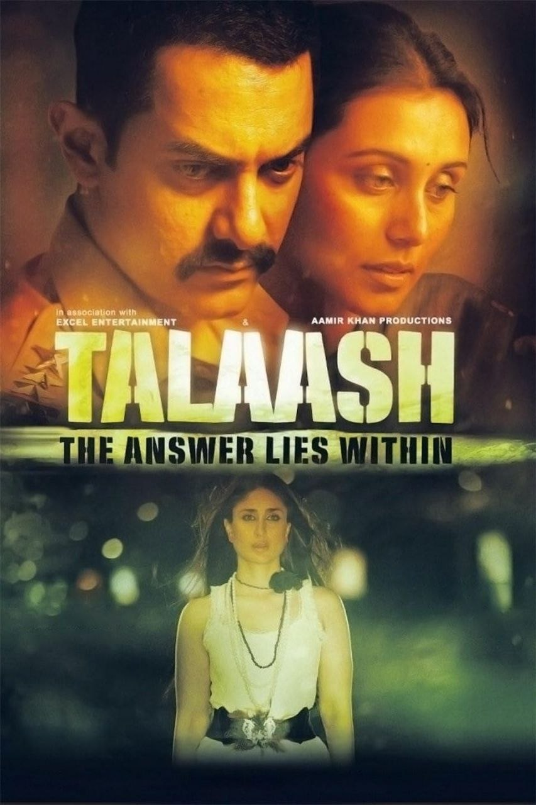

Director: റീമ കാഗട്ടി
Review by: ഷിജിൽ എം പി
ഇന്നലെ നടുവിൽ ബസ് സ്റ്റാൻ്റിൽ ബസ് കാത്തുകിടക്കുമ്പോഴാണ് ഞാൻ എൻ്റെ ഒരു പഴയ സുഹൃത്തിനെ കാണുന്നത്. അവൻ അപ്പോൾ ബസ് സ്റ്റാൻ്റിൻ്റെ അരികിൽ നെഞ്ചൊപ്പമുള്ള കൈവരിയിൽ പിടിച്ചു നിന്ന് തൊട്ടടുത്ത് ഒരാളുമായി തർക്കത്തിലാണ്. ഞാൻ പോയി നോക്കുമ്പോൾ നെയ്യാറ്റിൻകര ഗോപൻ്റെ സമാധിയാണ് വിഷയം 😀
ഒരു ഭക്തന് സമാധി എന്ന അവസ്ഥയിൽ എത്തിച്ചേരാൻ പറ്റുമോ എന്നാണ് അവർ ആ ബസ്സ്റ്റാൻ്റിൻ്റെ സൈഡിലിരുന്ന് ഇഴ കീറി പരിശോധിക്കുന്നത്. ഇടയ്ക്ക് ഭഗവത്ഗീതയും ഉപനിഷത്തുകളും റഫറൻസ് ആയി വരുന്നുണ്ട്. ഇത് കുറച്ചു നേരം കേട്ട ശേഷമാണ് ഞാൻ അവൻ്റെ മുൻപിലേക്കെത്തിയത്. ചർച്ച നിലച്ചു. അവൻ്റെ കൂടെയുള്ളയാൾ പിന്നെ കാണാം എന്നു പറഞ്ഞു പോയി. അൽപ്പ സമയം ഞാൻ അവനോട് സംസാരിച്ച ശേഷം ഞാൻ അവനോട് ചോദിച്ചു.
"ഈ സമാധിയുടെ കാര്യമൊക്കെ ചർച്ച ചെയ്യുന്നത് കേട്ടല്ലോ. നമ്മളൊക്കെ അൽപ്പം സയൻസ് ഒക്കെ പഠിച്ച് വന്നവരല്ലേ. എന്നിട്ടും ഇതൊക്കെ എങ്ങനെ ചർച്ച ചെയ്യാൻ തോന്നുന്നു?".
അവൻ്റെ മറുപടി ഇങ്ങനെയായിരുന്നു.
"ഇത് കേരളമാണാശാനേ... ഇവിടെ എന്തും ചർച്ച ചെയ്യും. ഇത്തരം ചർച്ചകളാണ് ഒരു ശരാശരി മലയാളിയുടെ നേരമ്പോക്ക്. അതിൽ നല്ല വിഷയങ്ങളും ചീത്ത വിഷയങ്ങളും ഉണ്ടാവും."
ഒന്നു നിർത്തി തുടർന്നു.
"നിങ്ങൾ നേരത്തെ ചോദിച്ച അതേ ചോദ്യം ഒരു സിനിമയിൽ അമീർഖാൻ അയാളുടെ ഭാര്യയോട് ചോദിച്ചിട്ടുണ്ട്. ആ സിനിമ ഒന്ന് കണ്ടു നോക്ക്..."
ആകാംക്ഷയോടെ ഞാൻ ചോദിച്ചു.
"ഏതാ ആ സിനിമ?"
അയാൾ അതിന് ഉത്തരം പറഞ്ഞു.
"തലാഷ്... പത്ത് പന്ത്രങ് വർഷം മുൻപ് ഇറങ്ങിയ അമീർഖാൻ്റെ പടമാണ്."
ആ കൂടിക്കാഴ്ചയ്ക്കു ശേഷവും ആ സിനിമയുടെ പേര് മനസിൽ തങ്ങിനിന്നു. ഒരു വിധം എല്ലാ സിനിമകളും തിരഞ്ഞ് കാണുന്ന എനിക്ക് ഇതെങ്ങനെ മിസ്സായി?. നെറ്റിൽ സെർച്ച് ചെയ്തു നോക്കി.
Thalaash: The Answer Lies Within
2012-ൽ പുറത്തിറങ്ങിയ ഒരു ഇന്ത്യൻ ഹിന്ദി ഭാഷാ സൈക്കോളജിക്കൽ ക്രൈം ത്രില്ലർ ചിത്രം. ആമിർ ഖാൻ, കരീന കപൂർ, റാണി മുഖർജി എന്നിവരാണ് പ്രധാന വേഷങ്ങളിൽ എത്തുന്നത്.
അന്നു തന്നെ ഞാൻ ഈ സിനിമ കണ്ടു. ഞെട്ടിക്കുന്ന തുടക്കവും അമ്പരപ്പിക്കുന്ന ഒടുക്കവും.
അതിനിടയിൽ ഇൻസ്പെക്ടർ ഷെഖാവത്തിൻ്റെ വേഷമിട്ട അമീർഖാൻ ഭാര്യയോട് ചോദിക്കുന്നു:
"നീ ഇതിലെല്ലാം വിശ്വസിക്കുന്നുണ്ടോ? ഒന്നുമില്ലേലും കുറേ പഠിച്ചതല്ലേ... ശാസ്ത്രം പഠിച്ചതല്ലേ നീ... ഒന്ന് ചിന്തിച്ച് നോക്ക്, നിനക്ക് നിൻ്റെ ബുദ്ധിയൊന്ന് ഉപയോഗിച്ചു കൂടെ? നിനക്കെങ്ങനെ വിശ്വസിക്കാൻ കഴിയുന്നു ഈ അസംബന്ധം?"
അതിന് ഭാര്യയുടെ മറുപടി:
"എന്തു വിശ്വസിക്കുന്നു എന്ന് എനിക്കറിയില്ല. പക്ഷേ അതിൽ നിന്നും എനിക്ക് അൽപം മനസമാധാനം കിട്ടുന്നുണ്ട്"
കാണാത്തവർ കണ്ടു നോക്കൂ...😊